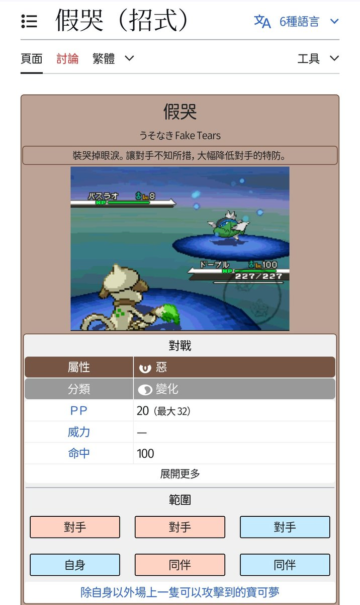

時璃風医詩🌈🏳️🌈
@hagishigure
@Harper_Ran86 呜呜呜…（特防大幅降低了！）

🦔
@Harper_Ran86
我的绳屋预计将于今年5月份停止运行，以后再来找我玩就只能去别人的绳屋或者约民宿啦～
以及最近我的绳缚号一直没更新并不是因为没玩，一方面是因为x的神秘封号机制，另一方面是因为来找我的很多朋友们不想让自己的照片出现在社交平台，只是自己留着看了～
关于绳屋停止运作的原因嘛……本刺猬没钱了😇